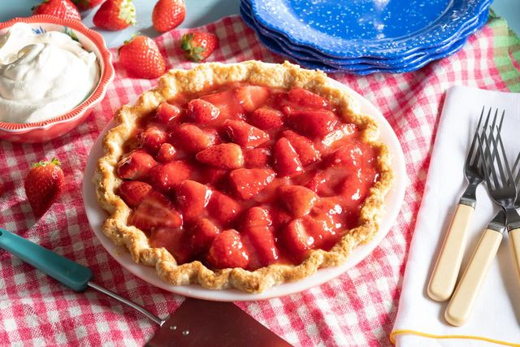

Strawberry Pie Recipe

Description
This is the easiest strawberry pie recipe around using canned strawberry pie filling.
A pint of fresh strawberries can be used in place of frozen strawberries
Ingredients
Yields 8 servings
- 1 (9 inch) pie crust, baked
- 1 (10 ounce) package frozen strawberries
- 1 (8 ounce) jar ready-to-use strawberry glaze
- 1 (8 ounce) container frozen whipped topping, thawed
Steps
- Mix together strawberries and glaze in a medium bowl. Pour strawberry mixture into pie shell.
- Top with whipped topping.